Free Math Problem Solver
Use AI Math Solver to instantly solve algebra, calculus and equations. Upload an image or enter text to get accurate, step-by-step solutions powered by math AI.
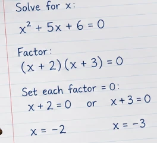
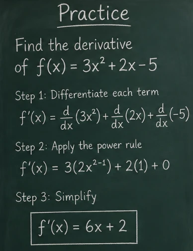
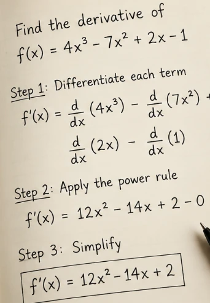
Tap to take a photo or select images
The Best AI Math Solver for You
Master any math challenge with our advanced AI math solver. Instantly solve math problems with AskMath. The math AI allows you to solve problems from algebra to calculus using image math solver capabilities—just take a picture and receive step-by-step solutions. Perfect for short on-time learning and functions as a powerful math solving calculator. Need more help? Experience the speed of our AI answer generator to handle all your study questions.
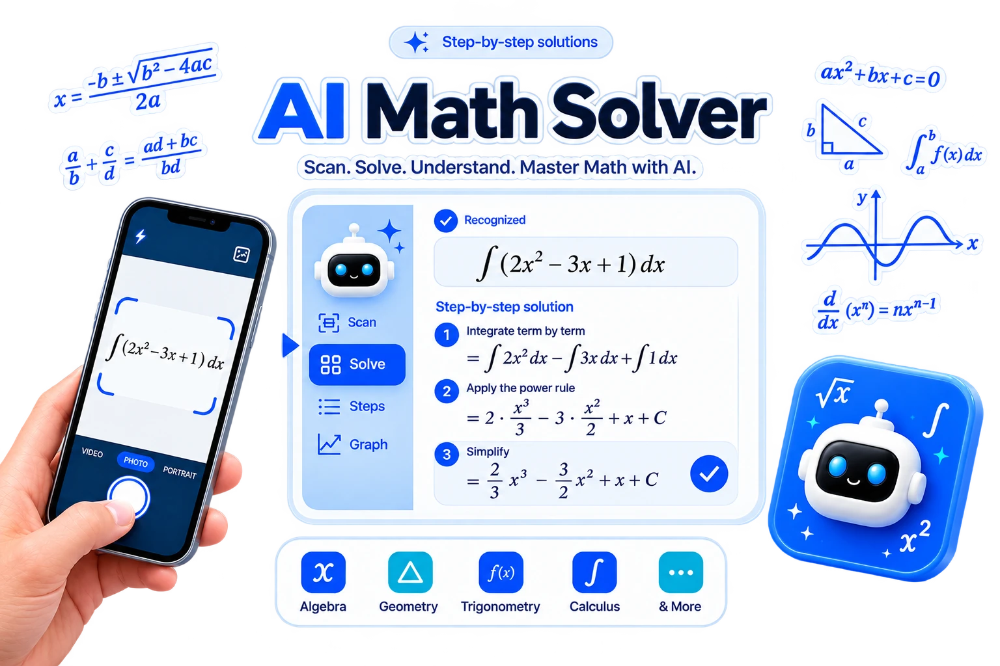
Core Features About Our AI Math Solver
Just snap a photo or take a screenshot to get instant math help
Upload your math problem as an image or capture it from your screen with AskMath. Our AI math solver uses advanced OCR and image recognition to accurately understand and solve problems. Acting as a reliable image math solver, this powerful math AI makes it easy to get clear answers from any image. For faster scan-based problem solving and step-by-step support, use our tool to solve math from a photo.
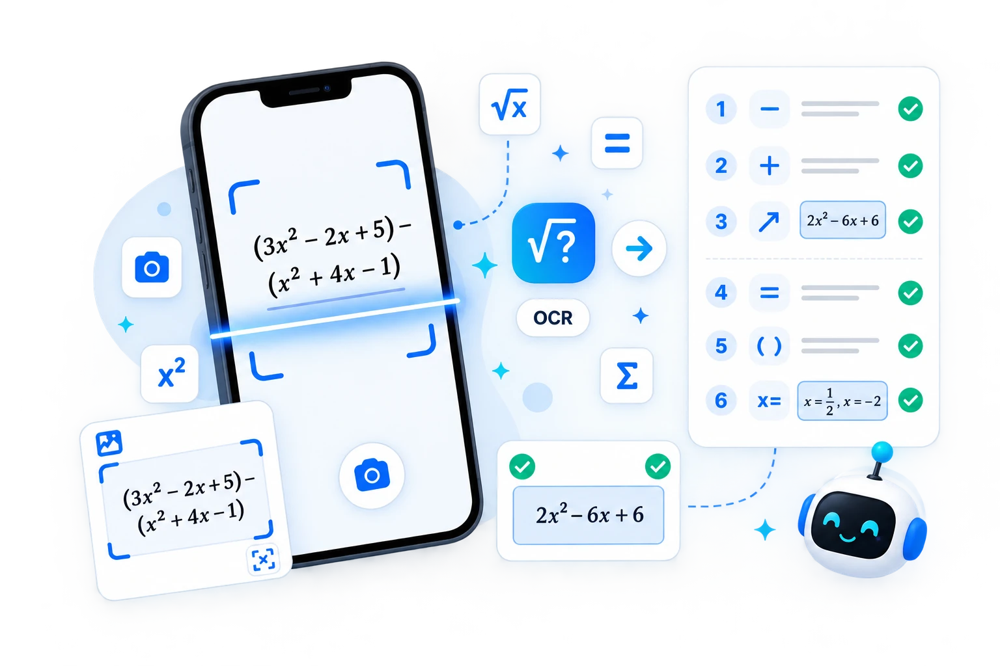
Highly accurate mathematical text analysis
Our AI math solver accurately identifies complex math expressions in text and solves them using powerful math AI technology. With a smart math solver AI engine, AskMath delivers fast and reliable answers to a wide range of problems directly from written content. For multi-step question parsing and clearer text-based reasoning, you can try our word problem solver.
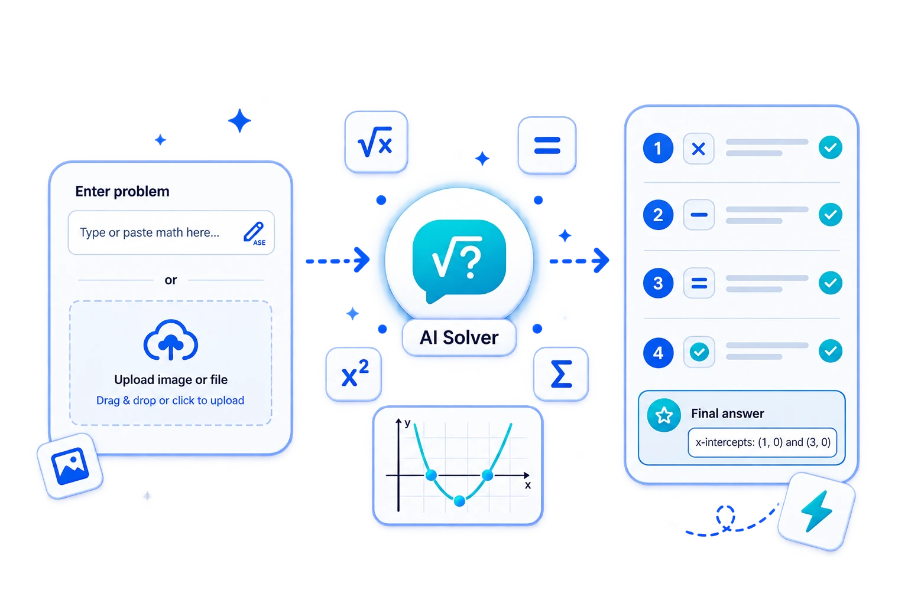
Smart math problem solver that handles complex applications
Our AI math solver uses advanced math AI to break down complex word problems into clear, easy-to-understand steps. Upload your application problem, and this powerful math problem solver analyzes the text and delivers precise, reliable solutions quickly and efficiently. To further sharpen your skills, you can also generate customized worksheets with our AI practice generator.
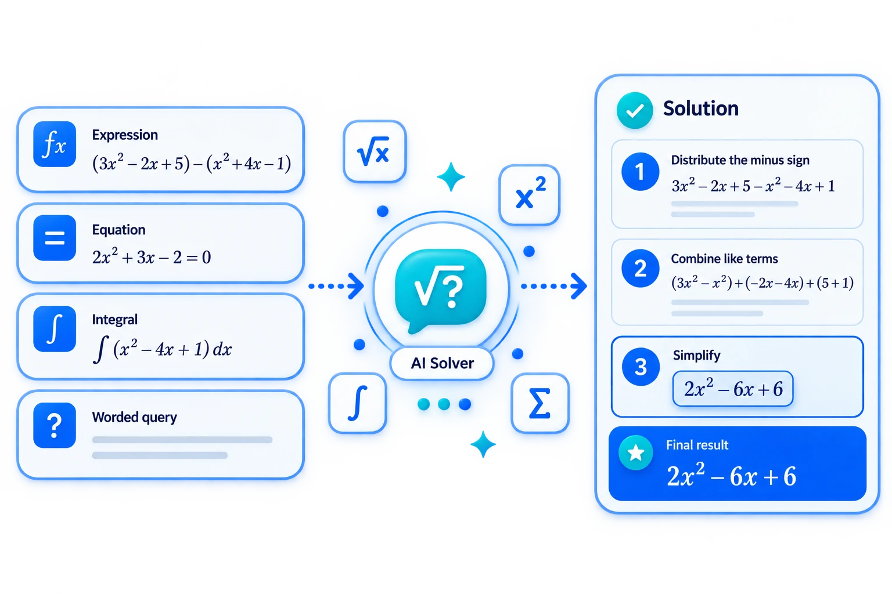
Receive fast, step-by-step answers from our AI math solver
For problems you enter or upload, our AI math solver scanner provides clear, sequential solutions. This advanced AskMath breaks complex problems into manageable, logical steps, giving you accurate answers and dependable support as a trusted math problem solver. When a question involves functions, curves, or visual relationships between variables, our graphing calculator can help you analyze it more clearly.
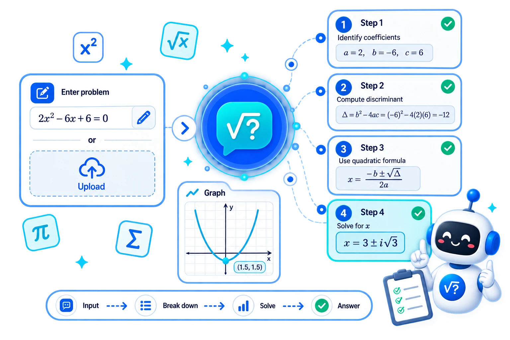
Complete math problem-solving workflow
Complete math problem-solving workflow supports follow-up questions for deeper understanding. This math AI-powered math solver calculator lets you ask for more details on any step. As a reliable math problem solver, it provides thorough explanations to help you master complex problems easily. For broader academic support beyond math, our AI homework helper gives you a simpler way to handle assignments with less stress.
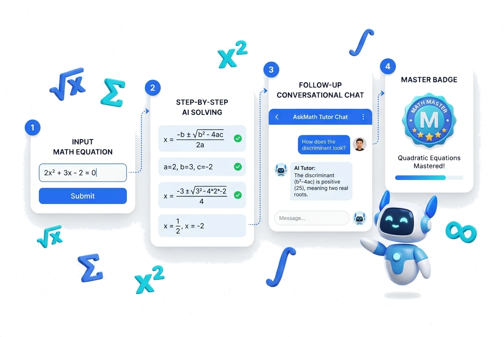
Get Math Help in Your Language with Our AI Solver
Our AI-powered solver calculator detects your language from images or text inputs. It provides precise math help, including solving inequalities maths, delivering accurate, multilingual solutions tailored to your needs. For more guided explanations and easier concept learning across different topics, our AI math tutor offers more structured support as you learn.
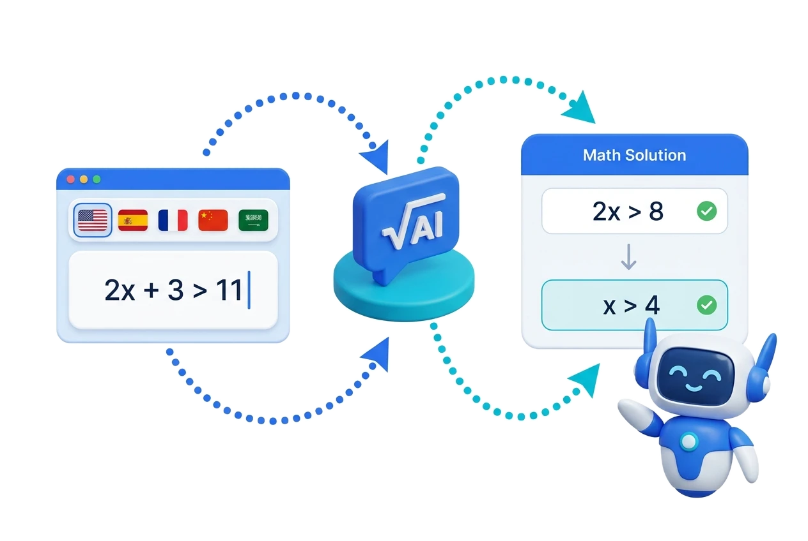
How to Use Our AI Math Solver
Upload a photo or enter your math problem as text
Easily submit your question by uploading an image of the problem or typing it directly. Our AI math solver with steps quickly processes your input to prepare for accurate analysis.
Receive detailed step-by-step solutions
Our advanced AskMath AI analyzes the problem and breaks down the solution into clear, logical steps. You'll get precise answers along with explanations to help you understand the process.
Ask follow-up questions anytime
If you need further clarification or have related problems, you can continue asking. Our math solver with steps provides ongoing math help whenever you need it.
Use Case About Our Free AI Math Solver
Ace Your Exams with an AI Math Solver with Steps
Students can rely on our AI math solver to verify practice test answers and master difficult subjects. By reviewing the math solver with steps logic, you can pinpoint exactly where mistakes occur, helping you master complex topics like calculus or statistics before exam day. It's the ultimate math problem solver for comprehensive revision and academic success.
Why choose our AI Math Solver?
Use it anytime, anywhere
No downloads needed-access our AI math solver online instantly from any device.
Clear, step-by-step solutions
Every problem is broken down into detailed, logical steps for full understanding.
Image and text input supported
Upload photos or type your question-our math solver scanner handles both with ease.
Covers all math types
From algebra to calculus, our math problem solver supports a wide range of topics. For focused help with derivatives, integrals, and limits, try our dedicated calculus solver.
Accurate and fast results
Get reliable answers in seconds, powered by advanced math AI.
Built-in math symbol calculator
Easily input complex equations with our integrated symbol calculator-perfect for advanced formulas and clean formatting.
What our customers are saying About Our Math Problem Solver
Samuel White
College Student
I love this AI math solver. It's super easy to use—just upload a pic or type your problem, and the math solver calculator gives clear, step-by-step help fast. Perfect for getting quick math help anytime.
Jackson Harris
Engineer
I rely on this AI math solver for tough questions. AskMath offers detailed help with fast, accurate answers. Uploading photos or typing problems makes solving math easier than ever.
Evelyn Taylor
High School Teacher
With this AI math solver, I get precise math help fast. Whether I input text or screenshots, the math solver calculator breaks down complex problems clearly and efficiently every time.
Liam Reed
PhD Candidate
As a graduate student, some of my calculus problems are incredibly dense. This AI math solver doesn't just give me the answer; it breaks down the entire logical flow. It's like having a tutor available 24/7.
Chloe Bennett
High School Student
I used to get stuck on word problems for hours. Now, I just snap a photo, and the AI math solver explains the setup and the solution perfectly. AskMath has been a total game-changer for my grades!
Noah Martinez
Engineering Student
The handwriting recognition is amazing. I can scan my scribbled notes, and the AI math solver interprets them perfectly. It's much faster and more intuitive than any other calculator I've used.
Start to Use Our AI Math Solver
Frequently Asked Questions (FAQs) About Our Free AI Math Solver
What math topics does this AI math problem solver cover?
Our AI math solver handles everything from basic arithmetic to complex calculus, geometry, and solving inequalities maths with ease. Whether you need an algebra math problem solver or a calculus tool, we've got you covered.
How do I use the math calculator to get instant solutions?
Simply upload a photo or type your equation. Our math calculator and AI math solver will analyze the input and provide clear, step-by-step solutions instantly.
Who can benefit from using an AI math helper?
Students, teachers, parents, and professionals looking for fast, accurate support will find this AI math helper an invaluable tool for learning, teaching, and verification.
Can the AI math solver handle complex word problems?
Definitely. Our AI math solver uses advanced logic to break down complicated application problems and word problems into easy-to-follow steps, making it more than just a basic calculator.
Is AskMath a free AI math solver available online?
Yes! No downloads are needed. You can access our free AI math solver online through any browser, anytime and anywhere, without paying a cent for high-quality help.
How reliable is this math solver AI?
Powered by advanced math AI models and a robust calculation engine, our math solver AI delivers highly accurate and dependable answers for both academic and professional use.
Does the image math solver recognize handwritten problems?
Yes! Our advanced image math solver uses cutting-edge OCR technology to recognize most handwritten problems clearly, providing accurate math help directly from your notebook.
Is AskMath math solver scanner mobile-friendly?
Absolutely. Our math solver scanner is fully optimized for mobile browsers, making it easy to snap a photo and solve problems on the go using your smartphone camera.
Does the math solver with steps provide full explanations?
Yes, our math solver with steps focuses on the learning process. It provides detailed, sequential explanations for every problem to help you understand the underlying mathematical concepts.
Create Practice or Test
Turn any problems or topics into a personalized practice set. Learn faster with instant feedback and step-by-step solutions.
Drop, Copy and Paste or Click here to add images or PDF
Try Sample Exercises
Algebraic Expressions
Simplify, evaluate & factor expressions (linear & polynomial)
Geometry Basics
Angles, areas, perimeters, and introductory proofs.
Statistics Intro
Mean, median, mode, variance, and probability basics.
AI Quiz Generator for Fast Quiz Creation from Notes and PDF
Turn lessons, worksheets, study guides, and training materials into ready-to-use quizzes. This AI quiz generator helps teachers, tutors, students, and training teams create clear quiz content faster, whether they start with a short prompt, plain text, or uploaded files. It is designed for people who need practical quiz creation without extra steps.
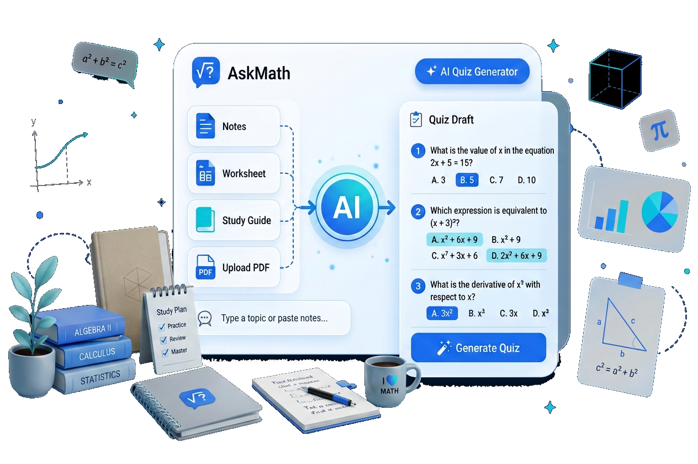
Key Features of Our AI Quiz Generator
AI Quiz Generator for Instant Quiz Drafts
Paste a lesson topic, chapter summary, or training outline into our tool and get a structured quiz in seconds. This online AI quiz generator helps you build question sets quickly, making it easier to prepare quizzes for class review, study practice, or internal learning checks. Beyond just creating questions, you can use our AI answer generator to instantly verify solutions and provide detailed feedback for every student.
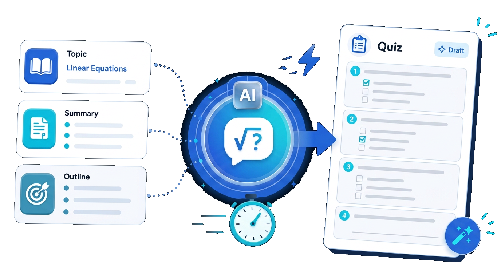
AI Test Generator for Flexible Quiz Settings
You can customize quiz length, difficulty, question style, and learning level with our flexible AI test generator. Whether you need a short five-question practice set or a more detailed assessment, you can shape the quiz to match your goal. This customization ensures that AI test generator acts as a 24/7 AI math tutor that adapts to your unique learning pace.
AI Quiz Generator from PDF for Existing Materials
Upload class notes, handouts, study guides, or training files and turn them into quiz drafts without rewriting the content manually. Our AI quiz generator from PDF is specially useful when you want to reuse existing materials in a faster, more interactive format. It is the perfect companion for students who want to efficiently solve their homework with AI by turning static notes into active study sessions.
How to Use the AI Test Maker
Add Content or a Photo to the AI Quiz Generator
Start with an image, prompt, pasted text, or uploaded file. Lesson summaries, revision notes, and handouts all work well as source material.
Customize Your Quiz with the AI Quiz Generator
Choose the number of questions, level of difficulty, and quiz format. Create quick practice quizzes or formal assessments.
Take the Quiz and Get AI Analysis
Answer the generated questions directly. Once submitted, our quiz maker AI provides instant performance analysis and feedback.
Best Use Cases for Our AI Test Generator Online
Why Our Quiz Maker AI is Ideal for Teachers and Students
Faster Quiz Creation for Daily Use
Our tool helps you create quizzes in less time, so it is easier to prepare review material for class, tutoring, revision, and daily practice without adding extra work to your routine.
Clear and Accurate Question Output
The platform turns source material into structured questions that are easy to review, refine, and use in real learning situations, giving users a more reliable AI exam generator.
Flexible for Different Learning Needs
Create short practice quizzes, topic reviews, homework checks, and more detailed assessments in one consistent format, with enough flexibility to support different study goals.
Easy to Use from Any Source Material
Start from a prompt, plain text, notes, handouts, or PDF files without changing the way you already work, making it a practical free AI test generator for everyday use.
Useful Across Devices and Schedules
Whether you are working in the classroom, at home, or on the go, it fits naturally into everyday teaching and study routines and stays easy to use across different settings.
Better for Reusing Existing Content
Turn notes, summaries, worksheets, and study materials into fresh quiz-based activities instead of rebuilding everything from scratch, so existing content can be used effectively.
What Users Say About Our AI Quiz Generator
Emily R.
Middle School Teacher
"This free AI quiz generator helps me turn lesson notes into quick classroom quizzes before the end of class. It saves time and makes review much easier."
Daniel K.
Private Tutor
"This AI exam generator gives me a faster way to build revision quizzes for my students. I still edit the final version, but the first draft is done in minutes."
Sophia L.
University Student
"I upload study guides and use the AI quiz generator from PDF before exams. It makes practice more active than just rereading notes."
Jason M.
Training Coordinator
"The quiz maker AI feature is useful for workshop reviews and onboarding sessions. It helps our team turn training material into simple knowledge checks."
Olivia T.
Learning Program Manager
"We use it as an AI test generator tool for quick internal review tasks. It is straightforward and saves our team real time."
Rachel P.
College Student
"This AI test maker helps me turn my study notes into quick practice quizzes before exams. It makes revision more active and helps me see which topics I still need to work on."
Start Creating with Our Free AI Quiz Generator
Frequently Asked Questions About AI Quiz Generator
What is an AI quiz generator?
An AI quiz generator is a tool that creates quiz questions from prompts, text, notes, or uploaded files. It helps users turn learning materials into interactive quizzes more quickly and easily.
How does the AI exam generator work online?
The AI exam generator turns prompts, notes, text, and uploaded learning materials into structured quiz and practice questions.
Is it an AI test generator free to use?
Yes. AskMath provides a limited number of free daily uses, allowing you to explore all the features and generate questions without any upfront cost.
Can I use this AI quiz generator for different subjects?
Yes. This AI quiz generator can be used for math, science, history, language study, and many other learning scenarios where users need fast and structured quiz practice.
Can I use the AI quiz generator with my own PDFs or images?
Yes. AskMath supports a wide range of file formats, including long PDFs, and even photos of your handwritten notes (PNG/JPG).
Can students use the AI quiz generator free for self-study?
Yes. Students can turn their notes into quizzes, complete questions right away, and understand the material through instant feedback.
Can teachers adjust learning based on quiz results from the AI test generator?
Yes. After a quiz is completed, the AI test generator provides automatic analysis to show how well users understand different knowledge points.
What question types can I create with quiz maker AI?
The quiz maker AI supports review quizzes, topic checks, practice tests, and other structured learning questions depending on the source material you provide.
Is my information private when I use an AI quiz generator?
Yes. It takes privacy seriously when users work with the AI quiz generator, including uploaded files, lesson notes, and study materials.
Can I use this AI test maker for tutoring and workshops?
Yes. The tool works well as an AI test maker for tutoring sessions, small group learning, workshops, and other guided learning environments.
Why should I use a quiz maker AI instead of writing quizzes manually?
Using a quiz maker AI saves significant time, speeds up the content creation process, and adds automatic answer analysis once a quiz is completed.
No saved conversation yet
Save important questions, mistakes, or useful problems to review and improve your learning.
No saved question yet
Save important questions, mistakes, or useful problems to review and improve your learning.
Simple Pricing for Smarter Learning
Get instant solutions, practice sets, and step-by-step learning. Start free, upgrade anytime.
Free
Solve problems and practice with daily credits. Start learning for free.
- Limited Daily Credits (resets every day)
- Access to Basic Features
- Access to Basic Models
- Standard response time
Try AskMath for Free
Unlimited
Most popularUnlimited Standard credits for everyday study and practice.
/month
- Unlimited Standard Credits
- 400 Advanced Credits
- Access to Advanced Features & Models
- Priority support
Best for Everyday Learning
How Credits Work
Credits vary by feature. Standard credits cover everyday use. Use Advanced credits for higher-quality results.
| Features |
Actions
|
Credits
|
|---|---|---|
| Solve - Standard Model | Answering questions, Create practice question, Try another method, Watch related videos, Regenerate, Extract Questions | Each request = 1 Standard Credits |
| Solve - Advanced Model | Answering questions, Create practice question, Try another method, Watch related videos, Regenerate | Each request = 1 Advanced Credits |
| Practice Test - Standard Model | Create practice or test, Create new set | Each request = 2 Standard Credits |
| Practice Test - Advanced Model | Create practice or test, Create new set | Each request = 2 Advanced Credits |
| Practice Test - Basic actions | Submit practice, Submit test | Each request = 1 Standard Credits |
Solve - Standard Model
1 Standard CreditAnswering questions, Create practice question, Try another method, Watch related videos, Regenerate, Extract Questions
Solve - Advanced Model
1 Advanced CreditAnswering questions, Create practice question, Try another method, Watch related videos, Regenerate
Practice Test - Standard Model
2 Standard CreditsCreate practice or test, Create new set
Practice Test - Advanced Model
2 Advanced CreditsCreate practice or test, Create new set
Practice Test - Basic actions
1 Standard CreditSubmit practice, Submit test
Go Unlimited for a Better Learning Experience
Frequently asked questions
What's included in the Unlimited plan?
The Unlimited plan includes unlimited Standard credits for everyday math problem solving and practice tests, 400 monthly Advanced credits for complex high-precision calculations, access to advanced AI models, and priority support.
Does the Unlimited plan renew automatically?
Yes, the subscription renews automatically each month for your convenience. You can cancel your subscription at any time directly from your account settings without any cancellation fees.
Do credits roll over after my plan ends?
Advanced credits are renewed at the start of each billing cycle and do not roll over to subsequent months.
Can I get a refund?
We offer refunds in accordance with our refund policy. If you experience any issues with the service, please reach out to our support team at support@askmath.com.
What are Standard and Advanced credits?
Standard credits power our fast, everyday math models for algebra, equations, and quiz generation. Advanced credits utilize our most sophisticated reasoning models for complex calculus, proofs, and multi-step word problems.
What happens if I run out of Advanced credits?
You can continue using our Standard models with unlimited access, or purchase add-on Advanced credit packs at any time.
Are payments secure?
Yes, all transactions are encrypted using industry-standard SSL protocols and processed through secure, globally trusted payment gateways.